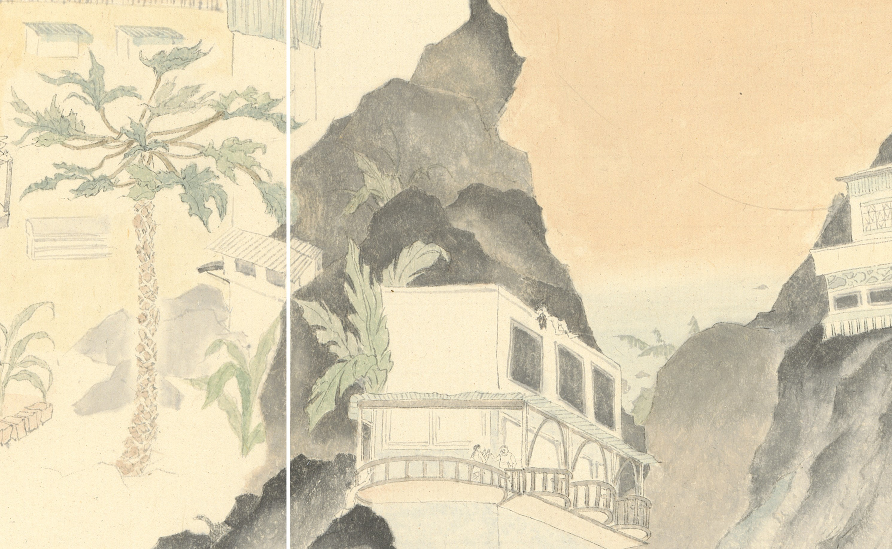

回家路上 On The Way Home
從關渡捷運站出發，經過無數小樓梯、沿著幾戶人家、穿越萬善祠，才能回到家裡。 這段路上埋藏著各種難以忽視的怪誕，每次經過都能闖入不同時空。
MRT関渡駅から出発し、無数の階段を登り、いくつかの民家に沿って、万善祠を通り抜けると、家にやっと着く。 道中に隠れた奇怪で不思議なものを無視できず、通り過ぎるたびに異なる時空に入り込んでしまう。


從關渡捷運站出發，經過無數小樓梯、沿著幾戶人家、穿越萬善祠，才能回到家裡。 這段路上埋藏著各種難以忽視的怪誕，每次經過都能闖入不同時空。
MRT関渡駅から出発し、無数の階段を登り、いくつかの民家に沿って、万善祠を通り抜けると、家にやっと着く。 道中に隠れた奇怪で不思議なものを無視できず、通り過ぎるたびに異なる時空に入り込んでしまう。
